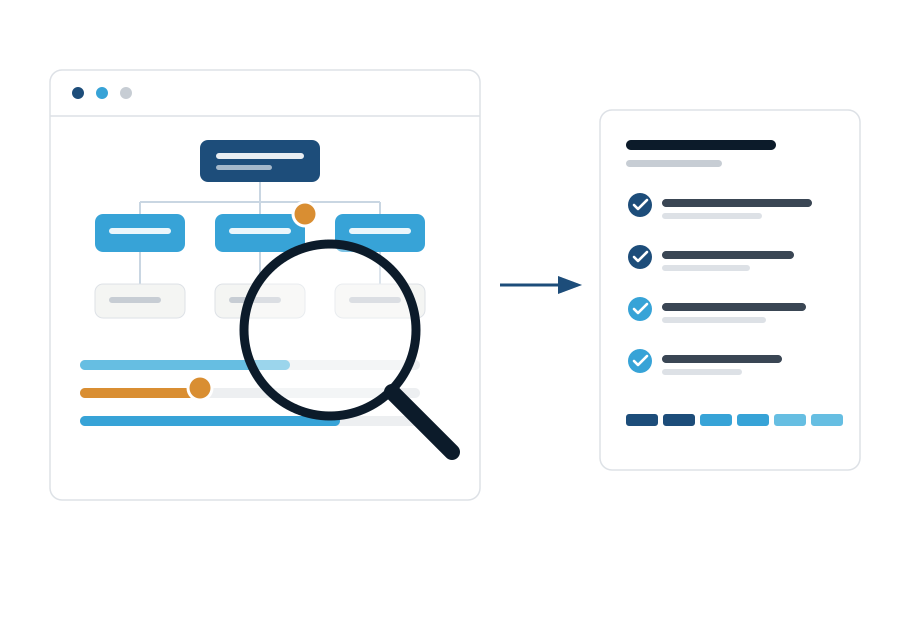

Диагностика и аудит системы управления
За 2–4 недели разбираемся в особенностях вашей компании и её бизнес-процессах — и показываем, где теряется управляемость и почему бизнес зависит от вас. Результат — дорожная карта на 6 месяцев: что менять, в каком порядке и что это даст.

Три шага — от знакомства к системе управления
Мы не начинаем с программы. Сначала — экскурсия в бизнес, затем диагностика, и только на её основе — дорожная карта изменений.
Экскурсия в бизнес
Бесплатная онлайн-встреча ~90 минут: смотрим на компанию глазами бизнес-архитекторов и показываем, что работает на рост, а что держит бизнес в ручном режиме.
Диагностика и аудит
Глубокий аудит управленческой логики компании и управляемости: интервью, анализ и выработка дорожной карты на 6 месяцев.
Программа систематизации
Программа «Архитектура системного бизнеса»: внедрение системы по дорожной карте — оргсхема, ритм, показатели, финансовый контур.
Экскурсия в бизнес: 90 минут — и картина ясна
Онлайн-встреча с партнёрами ASM Strategy. За 60–90 минут вы получите точную картину:
Что работает на рост
А что держит бизнес в ручном режиме и где вы тянете компанию на себе.
Где утекает прибыль
И почему теряется рентабельность — на каких стыках функций и решений.
Почему не выстраивается команда
Которая берёт ответственность: как настроить задачи и сроки между людьми.
Где система держится на привычках
А не на структуре и правилах — и что с этим делать в первую очередь.
В месяц мы проводим не более 10 экскурсий. Это не искусственное ограничение: каждую встречу готовят и ведут лично партнёры, а не отдел продаж.
Экскурсия бесплатная, но мы проводим её не для всех — берём только компании, которым действительно можем помочь. Если увидим, что можем, — предложим следующий шаг. Если нет — вы уйдёте с ясной картиной, списком приоритетов и пониманием, нужна ли вам полная диагностика.
Диагностика нужна, если это про вашу компанию
Бизнес в ручном режиме больше 3 лет
Компания выросла, а управление осталось в ручном режиме: решения, контроль и развитие держатся на владельце.
Функции завязаны на собственнике
Продажи, финансы, найм, ключевые клиенты — всё в итоге замыкается на вас, и отпуск превращается в удалённую работу.
Двойное подчинение и размытая ответственность
Сотрудники не понимают, кто за что отвечает; поручения теряются между руководителями.
Сотрудники приносят проблемы, а не решения
Команда ждёт указаний вместо того, чтобы приносить готовые предложения и брать ответственность.
Компания упёрлась в потолок роста
Выручка стоит на месте не из-за рынка: с ростом задач множатся «пожары», не хватает ресурса и внутренней системности — конструкция не тянет следующий масштаб.
Инструменты внедряли — не прижились
CRM, планёрки, KPI уже пробовали: поработало месяц и откатилось. Значит, дело в системе управления, а не в инструментах.
Исследование компании, а не анкета «для галочки»
Мы смотрим на компанию как бизнес-архитекторы: как устроены функции, ответственность, деньги и управленческий ритм — и где конструкция ломается.
Интервью с собственником и руководителями
Снимаем реальную картину: как принимаются решения, где теряются задачи, на ком держатся функции.
Аудит организационной логики
Анализируем структуру, распределение функций и ответственности, двойные подчинения, узкие места и зависимость от владельца.
Анализ финансовых показателей
Структура дохода, себестоимости и затрат; структура отдела продаж, клиентов и продуктов; динамика финансовых показателей и продаж.
Точка Б и дорожная карта
Вместе с вами формулируем цели компании и декомпозируем их — через выручку, средний чек, продукты, команду и географию. Итог — дорожная карта на 6 месяцев под особенности вашей компании.
Что вы получите на руки
Отчёт о состоянии системы управления
Объективная картина управляемости компании: что работает, что держится на вас, что ломается при росте.
Карта узких мест
Конкретные точки потери управляемости: функции, ответственность, коммуникации, деньги.
Идеальная картина организации
Согласованное с вами целевое состояние: структура и система управления, при которых бизнес растёт без вашего ежедневного участия.
Дорожная карта на 6 месяцев
Последовательный план: какие инструменты внедрять, в каком порядке и какой результат даст каждый этап.
Сроки и условия
Диагностику проводят лично партнёры ASM Strategy — Максим Юрин и Юрий Маракулин, бизнес-архитекторы с 20+ годами управленческого опыта. Мы не передаём эту работу младшим консультантам.
Четыре этапа за 2–4 недели
Запуск и интервью
Установочная встреча, сбор материалов, интервью с собственником и ключевыми руководителями.
Анализ
Аудит управленческой логики компании, функций, ответственности и финансовых показателей. Формируем карту узких мест.
Итоговая сессия
Разбираем результаты с вами, формируем идеальную картину и приоритеты изменений.
Дорожная карта
Защищаем дорожную карту на 6 месяцев: этапы, инструменты, ожидаемые результаты.
Частые вопросы о диагностике
Чем платная диагностика отличается от экскурсии в бизнес?
Экскурсия в бизнес (~90 минут) — бесплатная встреча: смотрим на компанию со стороны и показываем, что работает на рост, а что держит бизнес в ручном режиме. Платная диагностика — 2–4 недели глубокого аудита с интервью, анализом управленческой логики компании, итоговой сессией и дорожной картой на 6 месяцев.
Нужно ли участие команды или достаточно собственника?
Основная работа идёт с собственником. Для объективной картины мы проводим интервью с ключевыми руководителями, а итоговую сессию по результатам можно провести вместе с управленческой командой — тогда выводы сразу становятся общим планом действий.
У нас уже внедряли инструменты, но они не работают. Поможет?
Да, это типовая ситуация. Диагностика выявляет методологические ошибки прошлых внедрений, после чего мы предлагаем реинжиниринг — перестройку существующих инструментов, а не внедрение с нуля.
Вы выезжаете к нам или работаете онлайн?
Оба формата: можем выехать на площадку вашей компании, а онлайн проводим диагностику по всему миру — без потери качества.
Начните с экскурсии в бизнес
Бесплатная онлайн-встреча ~90 минут: посмотрим на состояние управления в вашей компании и определим, нужна ли вам полная диагностика.